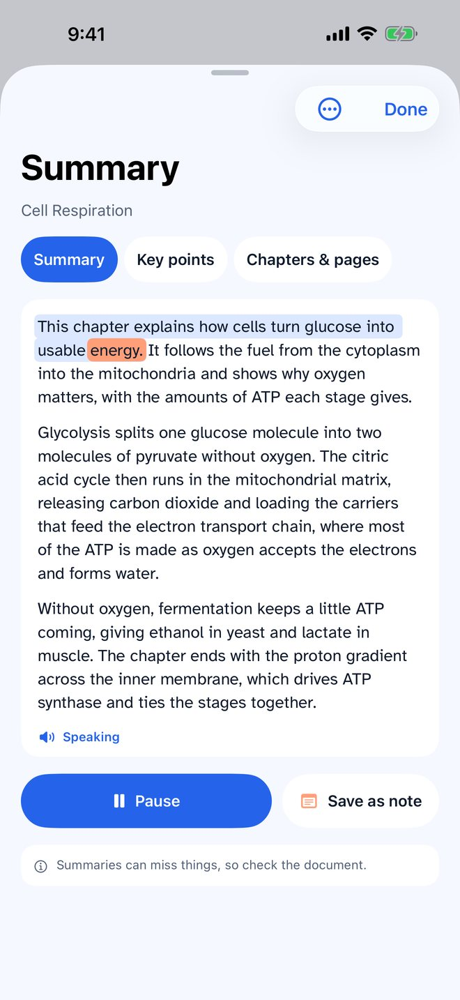
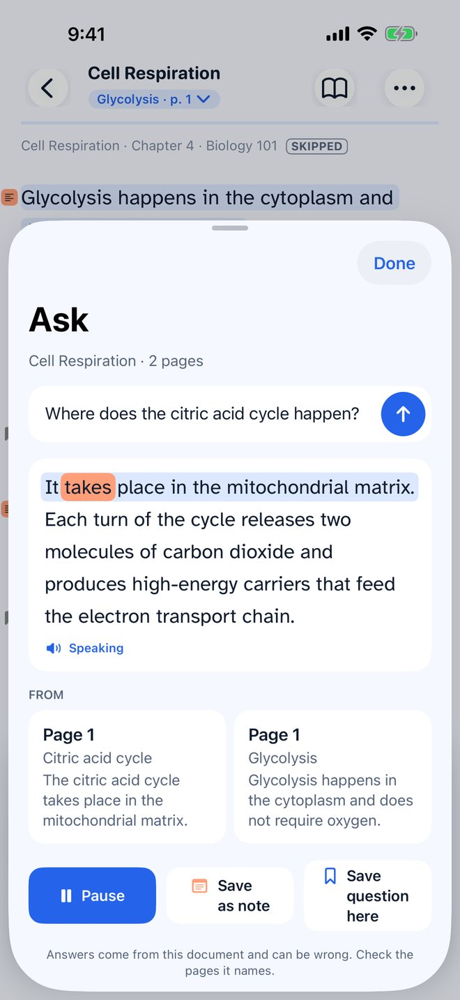
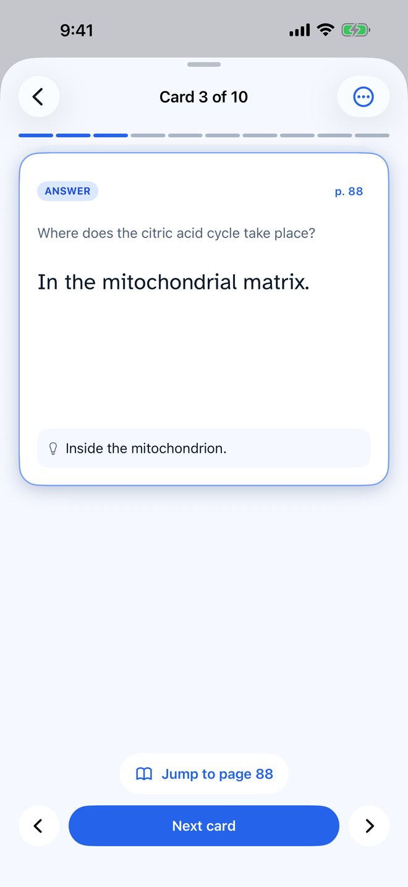

Read aloud for learners, on iPhone and iPad
Turn every reading into a study session.
Open a PDF, scan a textbook page or share an article, and Tellable reads it aloud in a natural voice, highlighting each word as it is spoken. Then summarize the chapter, ask it questions and test yourself with flashcards. It all runs on your device, so it works offline and your reading stays yours.
On a computer?Scan with your iPhone camera.
Five documents freeNo accountiOS 18 or later
Why we made it
More to read than time to read it.
Reading stalls.
- The reading list grows faster than you can sit down with it.
- Your eyes drift, and you read the same paragraph three times.
- Robotic voices trip over page numbers, footnotes and citations like [2–5].
- Many read-aloud apps want an account, a connection and your files on their servers.
Reading moves with you.
- Get through it anywhere. The bus, the gym, a walk, at up to 3x speed.
- Never lose your place. A coral box follows the voice word by word, so a glance finds you again.
- Hear it like a person reads it. Clean Read skips page numbers, running headers and citations.
- Keep it private. Everything is read on your device. No account, nothing uploaded.
Made for learners
Study with it, not just listen.
Tellable is built for students and anyone learning from what they read, including readers with ADHD or dyslexia. When the chapter is done, on-device AI helps you understand it and remember it.
-

Summaries
The key points of a chapter or the whole book, read aloud with the word highlighted.
-

Ask questions
Ask your document anything. Hear the answer from its pages, with the page it came from.
-

Flashcards
A deck made from your reading. Flip the cards, or let Tellable read question, pause, answer.
Your documents and questions never leave your device. Summaries, Ask and flashcards use Apple Intelligence on iOS 26, on an iPhone or iPad that supports it, with Tellable Pro.
What you get
-
Reads what you read
PDFs, scanned pages, EPUB, Word, DRM-free Kindle books, web articles, photos and pasted text.
-
Natural voices, offline
Voices that run on your iPhone or iPad, from 0.5x to 3x, on a plane or underground.
-
Private by design
No account and no ads. Your documents are read on your device and never sent to us.
Hear your first page in a minute.
Download Tellable, open something you have been meaning to read, and press play.
On a computer?Scan with your iPhone camera.
Five documents free. Pro is one payment, or yearly if you prefer.